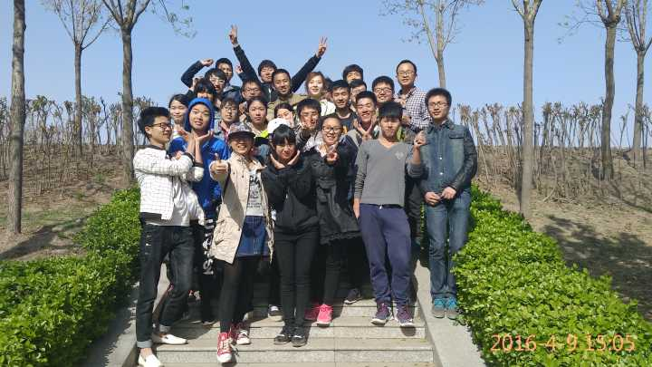

设计理念
设计元素
设计概念
联系作者
班级展示
相册
文件
文章
歌曲
科大介绍
相册
文件
文章
歌曲
IT咨询
相册
文件
文章
歌曲
项目展示
相册
文件
文章
歌曲
科大云盘
相册
文件
文章
歌曲
物联资讯
相册
文件
文章
歌曲
考试模块
相册
文件
文章
歌曲
关于我们
相册
文件
文章
歌曲
个人信息查询
个人资料
登录官网
添加数据
考试成绩查询
学分绩资料
总成绩资料
成绩计算说明
选课管理
上传申请
文件传送门
来张美图！
音乐大师！
学习视频
电影
软件游戏
数据资料
其他
新闻传送门
班级新闻
科大新闻
其他
网站链接
阿里巴巴矢量图库
ui中国
博客参考平台
Surine·阡陌
楼贤拓的blog
王凯的blog
乔金帅的blog
孙立伟的csdn
学习资源
物联网资讯
IT之家
慕课网
腾讯课堂
娱乐
Qi——yi
ejia——TV
腾讯游戏平台
科大云盘
反馈平台